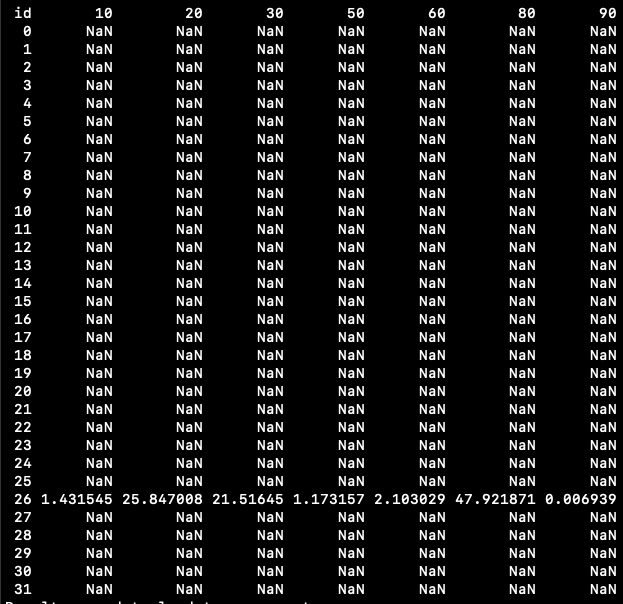

Path to your CSV with samples, latitudes and longitudes
Number (in Km) representing how close sites have to be for assignment into a group
Output CSV name of samples and which group they are assigned to
Outputs
CSV of samples and which groups they were assigned to (group_output.csv)
HTML map of collection sites coloured according to assigned group (map.html)
2. Creating Shapefiles from Groups
python melt-alt-map.py group_output.csv 2.5
Arguments
Path to your CSV with grouped samples from previous step (group_output.csv)
Number (in Km) representing buffer distance around groups to make shapefile polygons, this should be half or less than your grouping distance unless you want to overlap group polygons
Outputs
Shape file of groups (output_shapes.shp)
This will also output other files including .cpg, .dbf, .prj and .shx , keep these in the same directory as .shp if moving them.
Path to your .shp from previous step (output_shapes.shp)
Outputs
A number of .tif files titled ESA_WorldCover_10m_2021_v200_XXXXXX_Map.tif
There can be a variation in the number of files downloaded depending on the spread of your collection sites, normally 2 or 3 if its within the state.
This .tif file is essentially like a map with multiple layers of a particular region, some groups (shapes / polygons) will be covered one file and other groups will be in another
4. Extracting Land Use within Shapefiles
⚠️
The only non-automated step in this pipeline. You will need to run this code for each .tif file that you have downloaded.
Once run, rename the output file from land_type_percentages.csv to another unique name so it is not overwritten every time you run the script.
This output will be a CSV of each group shape contained within the .tif region and the percentages of each land type in those groups.
i.e. If you have three .tif files, run the command three times. Change the output CSV to a new name after each command.
Then, you can combine the three output CSVs into one and this will be the land use percentages of each of your groups. Make blank cells zero.
See example CSV outputsPolygons in ESA_WorldCover_10m_2021_v200_S21E114_Map.tifPolygons in ESA_WorldCover_10m_2021_v200_S33E114_Map.tifPolygons in ESA_WorldCover_10m_2021_v200_S30E114_Map.tif
Each column in the CSV represents a land type (trees, grassland etc), some of the CSVs may not contain some columns if they are not present. Be sure to include all columns that are present across all CSVs into the combined CSV.
If you only have one .tif you shouldn’t need to do all this faff.
ESA Land Use Codes
Layer (Class)
Colour (RGB)
Hex
Colour
Map Code
Trees
0,100,0
#006400
Trees
10
Shrub Land
255, 187, 34
#FFBB22
Shrub Land
20
Grassland
255, 255, 76
#FFFF4C
Grassland
30
Cropland
240, 150, 255
#F096FF
Cropland
40
Built
250, 0, 0
#FA0000
Built
50
Bare / Sparse Vegetation
180, 180, 180
#B4B4B4
Bare / Sparse Vegetation
60
Snow and Ice
240, 240, 240
#F0F0F0
Snow and Ice
70
Permanent Water Bodies
0, 100, 200
#0064C8
Permanent Water Bodies
80
Herbaceous Wetland
0, 150, 160
#0096A0
Herbaceous Wetland
90
Mangroves
0, 207, 117
#00CF75
Mangroves
95
Moss and Lichen
250, 230, 160
#FAE6A0
Moss and Lichen
100
I will probably improve this step at some point.
Arguments
Path to your .shp from previous steps (output_shapes.shp)
GeoTIF downloaded in previous step (ESA_WorldCover_10m_2021_v200_XXXXXX_Map.tif)
Outputs
Multiple CSVs containing assigned groups and the percentage of each land use type that the shapefile polygon contains (land_type_percentages.csv)
5. Generating a Map of Land Use in Each Group (optional)


{kind=link}